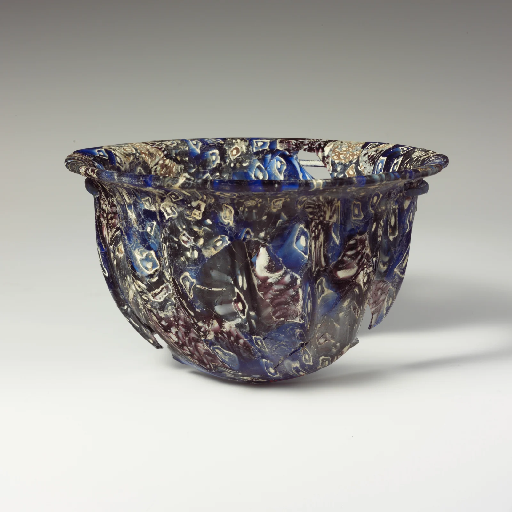

Oblique ribs carry a blue-violet shimmer; even the losses leave its rhythm intact.
A broad rim contains the busy pattern. Oblique ribs draw the eye down and around.
Analogous blue and violet hold together. Pale marks leap through lightness contrast.
Separate white motifs from reflections. A bright rim gives thickness; a shadow, weight.
Suggested design colours; not sampled from the object.
Sections of glass cane form the pattern.[1] The motifs seem to turn with the surface.
An unidentified Roman craftsperson. Casting persisted as blowing spread.[2]
White marks repeat without becoming identical. The work remains; the name does not.
60% paper white, 30% blue, 10% violet. Gather the pattern; give it room.
A stable ellipse + diagonals in one direction. Too busy? Remove half the little motifs.
Contemporary palette proportions, not an ancient recipe.
Unidentified maker · Roman, probably Italian
Late 1st century BCE–early 1st century CE
Creator: unidentified. Rights remain where applicable.
Museum image: Public Domain / CC0.
Independent visual interpretation.